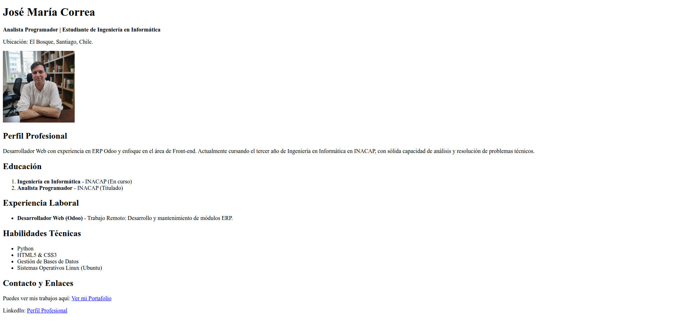

Analista Programador titulado con enfoque en desarrollo web. Actualmente cursando Ingeniería en Informática en INACAP y trabajando de forma remota en entornos ERP (Odoo).
Analista Programador titulado con enfoque en desarrollo web. Actualmente cursando Ingeniería en Informática en INACAP y trabajando de forma remota en entornos ERP (Odoo).
Trabajo Remoto | Septiembre 2025 · Actualidad
| Proyecto | Vista Previa |
|---|---|
| CV HTML Estructurado |  |